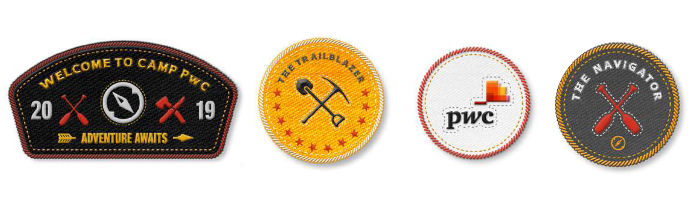
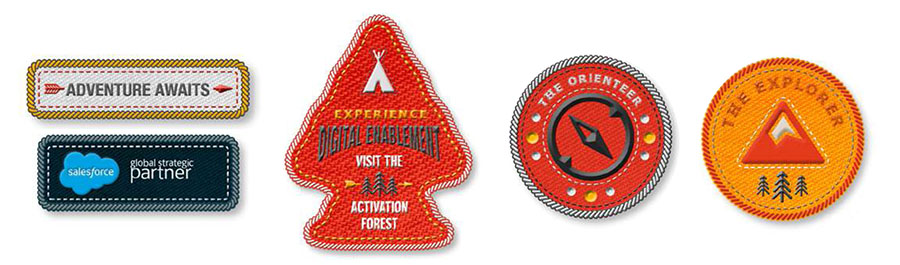
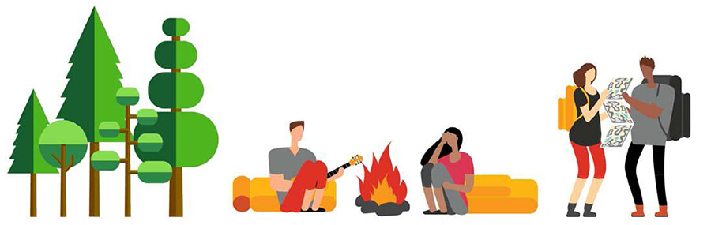
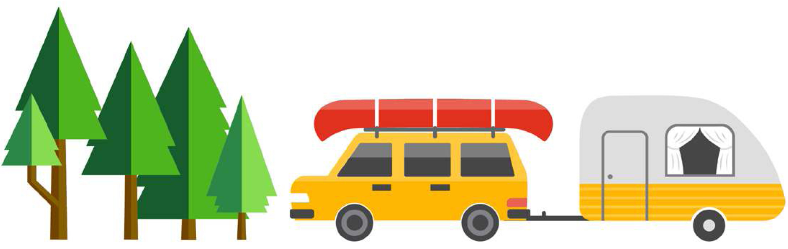
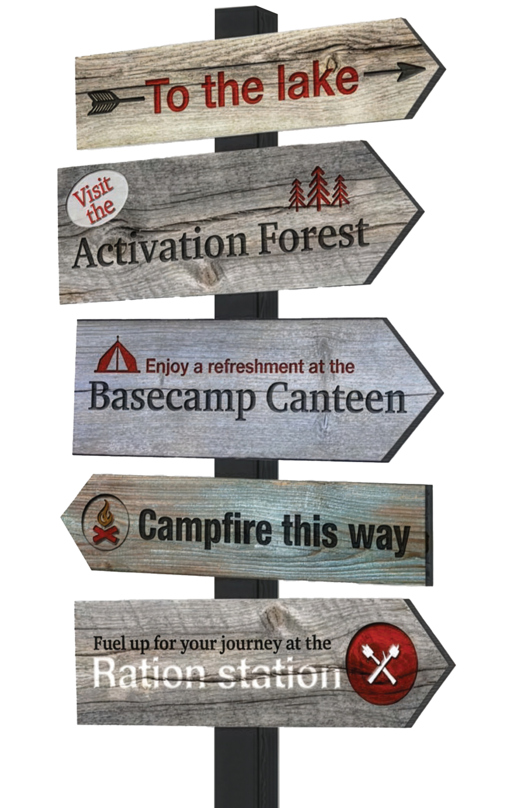
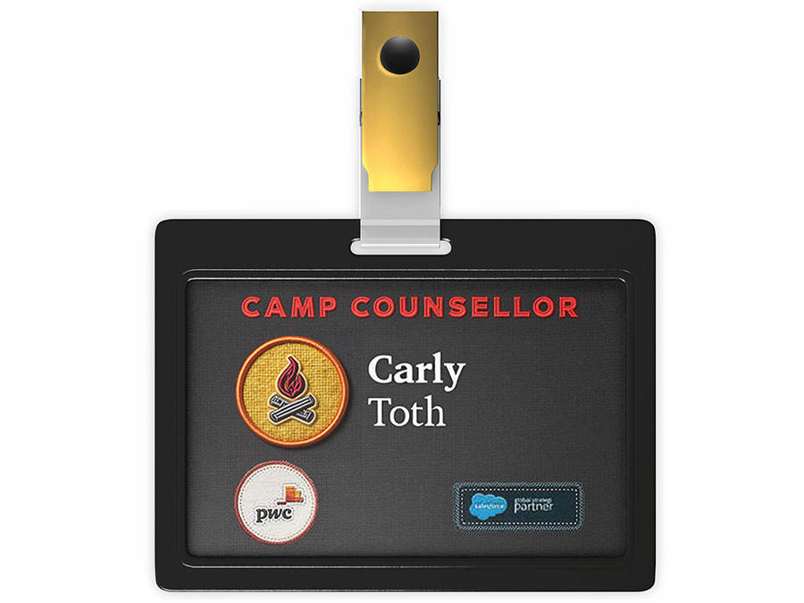
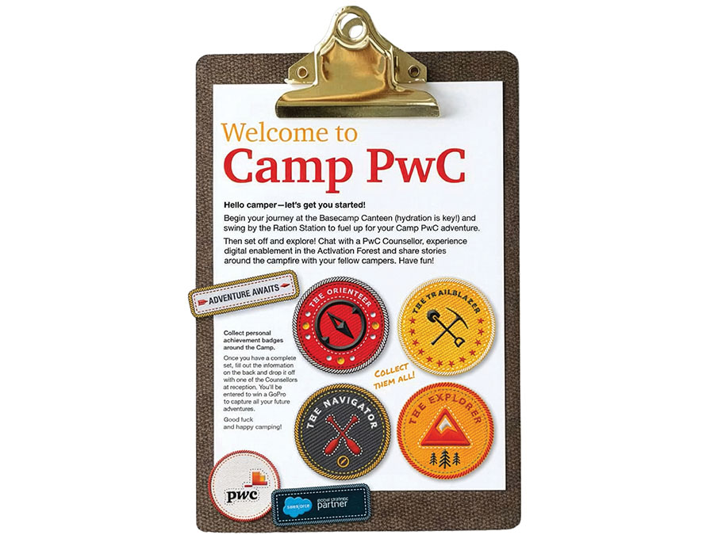
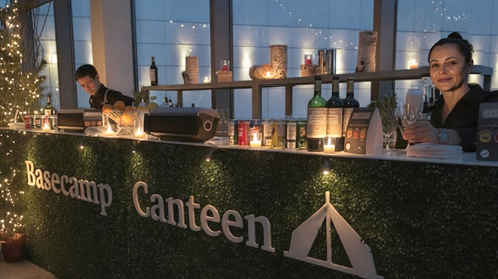
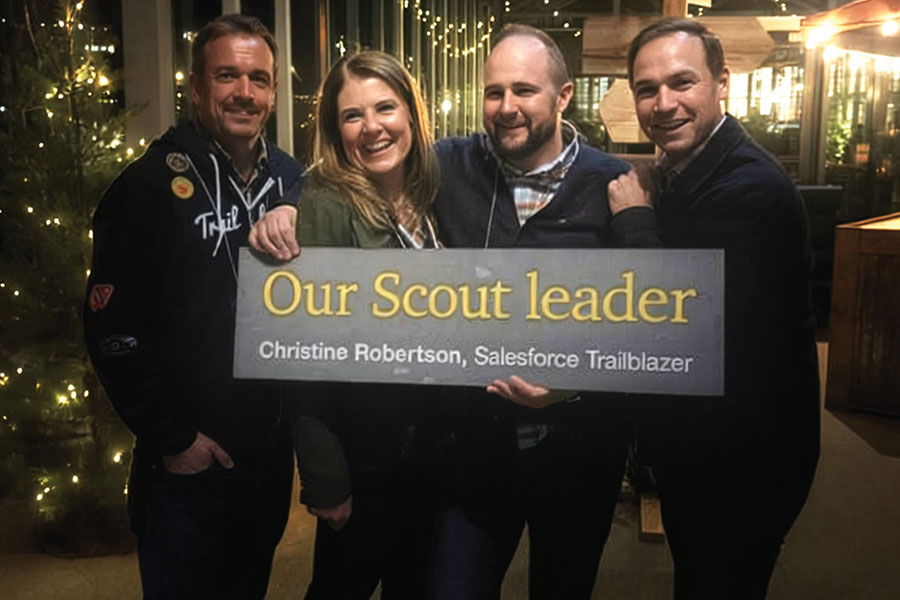
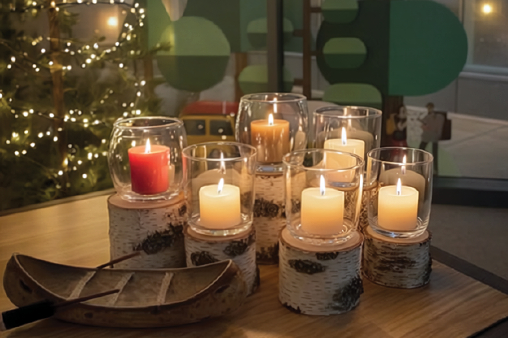

Adventure awaits: Camp PwC
A networking event that swapped small talk for campfire stories
RGD In-house Design Award WinnerAward of Distinction | Judge’s Pick
The trailhead
From a standard networking event to a shared adventure
As creative and design lead, I set the vision, built the team around it and managed the relationships that made it possible. That meant conceiving the complete experiential concept and identity, directing specialists across marketing, events and procurement, and navigating the dual brand compliance requirements of both PwC and Salesforce proactively, so that approvals moved fast and the production timeline stayed intact. From executive stakeholder management to vendor negotiation to hands-on design, this was player-coach leadership under real constraints.
The challenge: Transform a traditional corporate afterparty into a memorable experience that strengthens business relationships while showcasing digital transformation capabilities to 200+ senior executives and partners.
Timeline: Three-month planning and execution cycle
Key constraints: Limited budget, dual brand sensitivities (PwC and Salesforce), venue limitations, senior executive audience expectations

Event concept image created from site photos, using Firefly 5 in Photoshop 2026
Finding our compass
Nostalgia and human connection
Looking for a theme that worked well alongside the Salesforce Trailblazing concept while delivering a strong PwC brand presence, we found our way to adventure camp.
Strategic context: The event was designed to extend and integrate with PwC Canada’s Salesforce-empowered back-office transformation campaign for an audience already familiar with our journey-based messaging and open to Salesforce implementation.
Design philosophy: Professional nostalgia without childishness—sophisticated illustration style, premium materials and refined execution made the concept appropriate for senior executives while maintaining warmth and approachability. The adventure and orienteering framework organized information cohesively without overwhelming the content.
PwC core colours with natural element colours added
Created to further concept and brand equally


Aligned with both brands, distinctive presence


Focus on brand management
Challenge: Navigate both PwC and Salesforce brand requirements while creating memorable, PwC-branded experience that strengthens our position with potential buyers of our Salesforce-enabled services.
Approach:
- Strict adherence to Salesforce brand guidelines for all co-branded materials outside venue
- Negotiated special permission for subtle logo modifications (embroidery and textile textures) for co-branded deliverables remaining inside venue
- Positioned creative as strategic extension of existing PwC Canada back-office transformation campaign, to integrate the event into a broader customer journey
- Built stakeholder trust through proactive compliance planning
Result: Zero brand revisions from either PwC or Salesforce teams—enabling swift approval and protecting tight production timeline.
Setting up camp
25+ touchpoints, one unified experience
I created a cohesive experience across more than two dozen integrated touchpoints while navigating significant budget and timeline constraints. Every production decision was made with both creative impact and cost efficiency in mind, building on the existing transformation campaign to maximize what we already had, collaborating with the print vendor to find high-impact, low-cost methods, and using in-house facilities wherever possible.
Environmental transformation
- Custom directional, informational and tabletop signage (15+ pieces)
- Laser cut window decals and architectural column wraps created a ‘forest’ atmosphere
- Coordinated with vendors and event management team to ensure all visual and experiential details were delivered on-brand and in theme
A gamification layer—event passports, collectible merit badges and thematic nametags—drove circulation throughout the evening. Attendees ended the night with badges stuck to their shirts and sleeves, adding another nostalgic layer to the event and driving C-suite attendees to ‘collect them all’.



Focus on production and budget management
Challenge: With six weeks remaining until event, custom embroidered merit badges would have consumed most of our production budget, with setup and approvals requiring more time than available.
Solution: Designed laser-cut stickers on durable, non-damaging vinyl substrate that mimicked embroidered aesthetic while maintaining premium collectible quality.
Result: Attendees not only completed their “adventure passports,” many proudly wore badges on shirts and sleeves throughout the event—turning collectibles into conversation starters and attendees into visible brand ambassadors.
Earning our badges
Recognition, results and a new template for what’s possible
The best PwC event I have ever attended
PwC Senior Stakeholder
What made this work
- Strategic alignment: Building on the existing journey campaign rather than starting from scratch created instant audience connection and gave stakeholders immediate confidence in the direction
- Proactive brand management: Treating compliance as a creative framework, not a constraint, produced zero revisions from either brand team and kept the production timeline intact
- Production innovation: The laser-cut adhesive achievement badge solution turned a budget limitation into an engagement advantage, exceeding the original concept in both quality and impact


